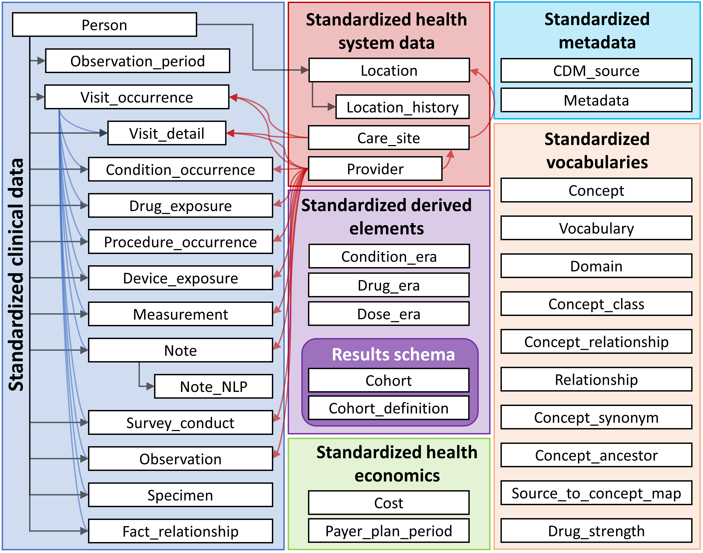
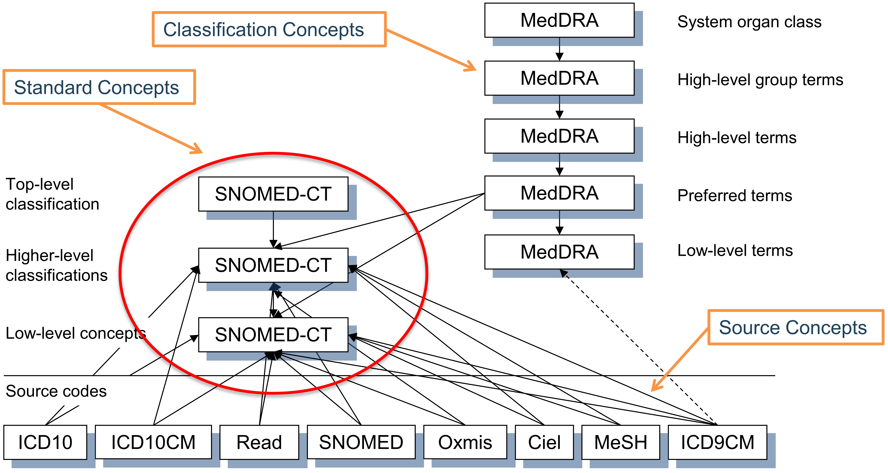
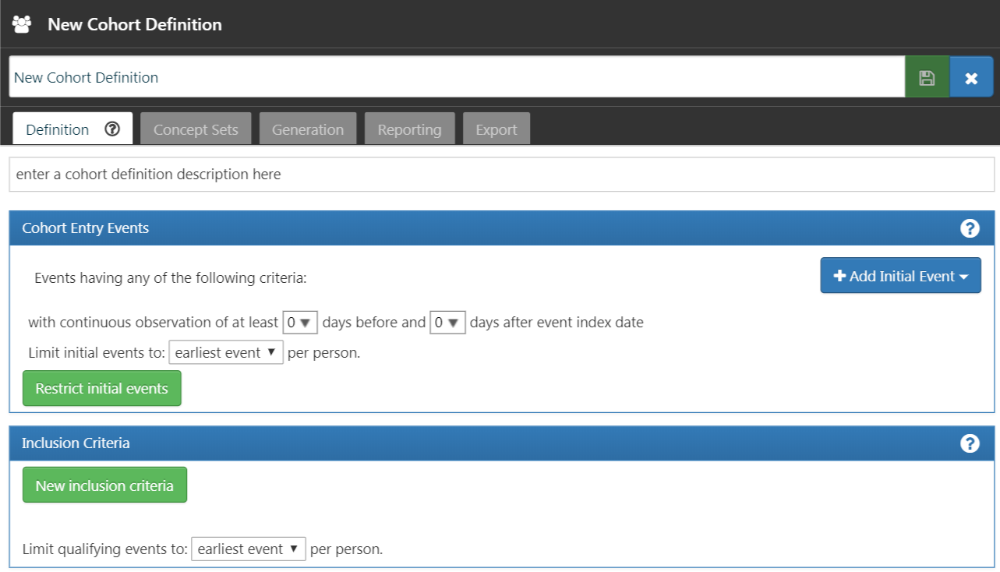
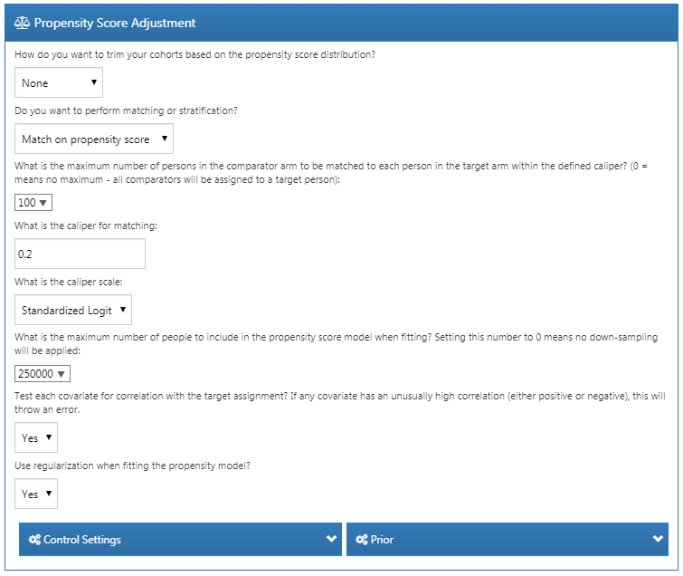
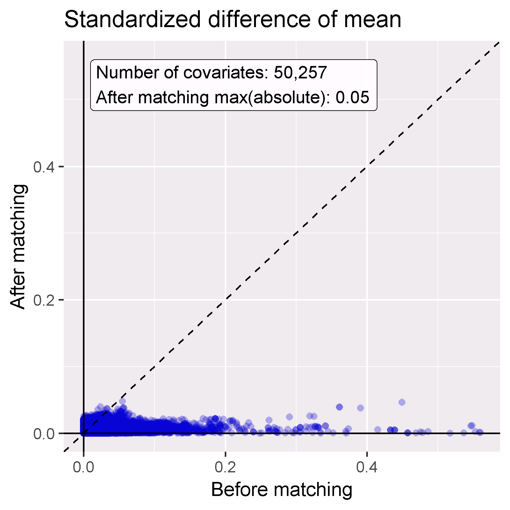
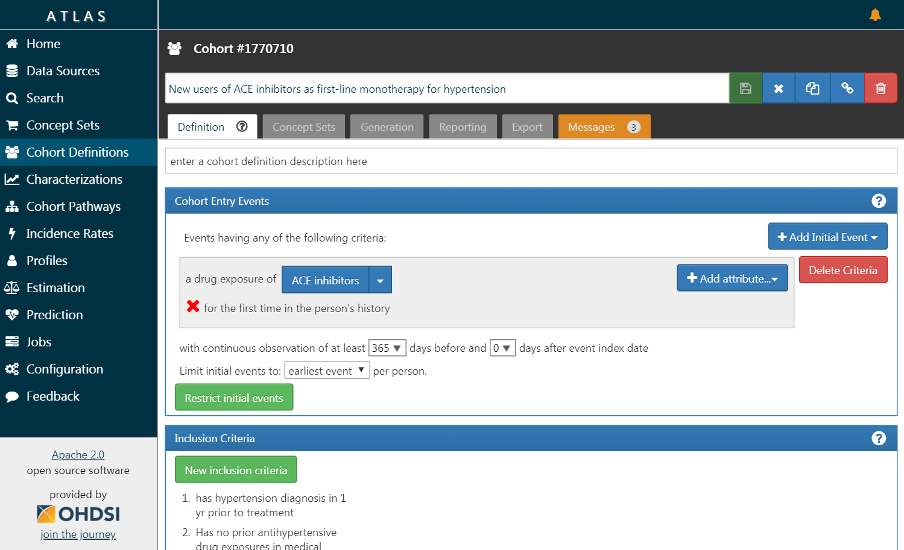

官方 v5.5 规范明确称其为最新版本；工具对 v5.5 新表和新字段的支持程度并不完全相同，部署前应查看兼容矩阵。
OBSERVATIONAL HEALTH DATA SCIENCES
OHDSI
OHDSI
与药物分析
一份从概念到实践的中文全景指南：先理解数据与研究问题，再完成队列设计、方法选择、ATLAS 配置、研究诊断与多数据库复现。
OMOP CDM
ATLAS 研究设计
HADES 分析执行
队列与表型
诊断与校准
00
OHDSI 是什么：社区、标准与证据网络
OHDSI 全称 Observational Health Data Sciences and Informatics，通常读作 “Odyssey”。它不是一家数据供应商，也不是一个集中式患者数据库，而是一个以开放科学方式协作的、多利益相关方、跨学科社区。
使命与工作方式
官方使命是赋能社区协作生成证据，以促进更好的健康决策和照护。其核心组合是：开放社区数据标准、标准化词汇、开源分析软件、方法学研究，以及各数据伙伴自愿加入的网络研究。
本地数据按机构治理，不自动对外共享
OMOP + 标准分析统一语义、设计与代码
汇总证据共享获批的聚合结果与诊断
OHDSI 2024 年公开材料列出 54 个国家、超过 9.74 亿条患者记录。该数字是有日期的数据源普查，不等同于今天可即时访问的数据库。
CDM、分析软件与研究材料强调公开和可复现；患者级健康数据仍受各机构法律、伦理与治理要求约束。
数据伙伴对每项网络研究分别决定是否参与；“加入 OHDSI”不意味着交出数据库或预先授权所有研究。
数字口径说明：“544 个数据源 / 54 个国家 / 9.74 亿条患者记录”来自 OHDSI 2024 年公开旅程报告。不同来源可能覆盖同一人群，且网络成员、可用时间范围和研究审批会变化，因此本页不把它解释为去重后的独立患者人数，也不把它当作当前可调用数据量。
OHDSI
开放科学社区与协作网络。
OMOP CDM
由 OHDSI 社区维护的观测性健康数据共同模型。
HADES / ATLAS
前者是分析 R 包体系，后者是与 WebAPI 配套的研究设计和分析平台；两者不是 CDM 本身。
01
先确定问题，再沿一条主线阅读
OHDSI 提供的是一组互补的方法。先区分描述、因果、安全性与预测，再沿“数据—队列—方法—执行—诊断”推进；不要从软件菜单反推研究问题。
推荐分析路径
描述性队列与治疗路径
建立新使用者或现患使用者队列，描述起始、持续、停药、换药、加药和再启动。结果以人数、发生率、持续时间和治疗序列为主。
CharacterizationCohortIncidenceTreatmentPatternsATLAS
原始数据病历、理赔、登记和检验数据
ETL结构转换与代码映射
OMOP CDM统一领域、字段和标准概念
队列进入、纳排、索引日与退出
分析表征、估计、安全性或预测
诊断质量、偏倚、校准与异质性
第一部分｜认识问题OHDSI 是什么，四类药物研究各回答什么。
第二部分｜准备数据理解 CDM、词汇、ETL 以及 ATLAS/HADES 的分工。
第三部分｜设计分析构建队列，评估可行性，再选择利用、效果、安全或预测方法。
第四部分｜落地执行按完整案例完成平台配置、运行、诊断和跨库复现。
第五部分｜查阅与核实用术语手册补概念，用边界清单避免过度解释。
02
OMOP CDM：让分析来到数据
CDM 将不同来源的数据转换为统一的关系型结构，使同一套分析代码可以在多个数据节点本地运行，而不必汇集患者级数据。
1
以人为中心
临床事件连接到 PERSON，并保留日期或起始日期，支持纵向观察。
2
按领域归位
疾病、药物、操作、检验等进入各自领域；概念的 Domain 决定记录应落入的表和字段。
3
标准概念驱动
标准化分析读取 *_CONCEPT_ID；源代码与源概念同时保留，用于追溯和质量核查。
4
数据与结果分离
临床与词汇表作为只读分析基础，队列和分析结果写入独立 Results Schema。
既往病史条件、药物、操作和检验
临床事件统一 PERSON 与日期锚点
后续观察暴露、结局与医疗利用
结构标准化
统一表、字段、主外键和时间表达。
内容标准化
通过标准词汇统一临床含义。
分析标准化
同一设计和代码跨数据库复用。

DRUG_EXPOSURE，连续暴露可派生为 DRUG_ERA。来源：The Book of OHDSI，Common Data Model ↗版本核实：截至 2026-09-06，官方 v5.5 规范明确称其为最新版本。v5.5 相比 v5.4 新增 7 个非必填字段，并增加 PACK_CONTENT、CONCEPT_METADATA、CONCEPT_RELATIONSHIP_METADATA 三张词汇相关表。官方兼容矩阵显示所列工具支持 v5.4 既有功能，但除 CDM R package 外，对 v5.5 新特性的完整、已测试发布支持仍标为待完成。官网“CDM 变更申请流程”页仍残留“当前 v5.4”的旧文案，本页以最新版本规范为准。
03
标准词汇：把不同代码变成同一种临床语言
词汇标准化不是简单换码，而是同时确定临床含义、所属领域、概念层级和可追溯的映射关系。药物领域主要以 RxNorm / RxNorm Extension 的标准概念表达。
标准概念
用于 CDM 的 *_CONCEPT_ID 字段，代表分析中的统一临床含义。
源概念
来自本地编码体系，通过“Maps to”关系映射到标准概念，并保存在源字段中。
领域
决定事件进入 Drug、Condition、Procedure、Measurement 等哪个临床表。
层级
利用 CONCEPT_ANCESTOR 纳入后代概念；药物可从 Ingredient 下钻到具体临床药品。
本地药品代码NDC、院内码、收费码等
→
Maps to保留源值，记录映射关系
→
RxNorm 标准概念Ingredient / Clinical Drug / Branded Drug

药物分析要点：概念集应说明所选层级、是否包含后代、排除项和词汇版本；映射到更宽泛概念时可能损失信息，应纳入数据质量评估。
04
ETL 与数据质量：先证明数据可用
ETL 不只是搬运数据，而是把源系统语义转成可审计的 CDM 记录。设计、映射、实现和质量控制应形成闭环，并可随数据与词汇版本重复运行。
设计
White Rabbit 扫描表、字段和值分布；Rabbit-in-a-Hat 记录表到表、字段到字段和转换逻辑。
代码映射
由具备医学知识的人员使用 Usagi 等工具，将源代码审阅并映射到标准概念。
实现
用可自动化的 SQL 或程序完成抽取、转换和加载，同时处理日期、单位、重复记录和主键。
质量控制
检查完整性、一致性、合理性与源到目标的数量变化，并记录可重现的测试与版本。
可追溯
保留源值、源概念和转换文档，能够解释每一条记录的来路。
可重复
数据刷新时重新执行同一流程，而非手工修补结果。
可维护
源系统、CDM 或词汇版本变化时，更新代码、文档和质量测试。
06
队列与时间轴：把临床问题写成可执行逻辑
OHDSI 队列是“在一段时间内满足一个或多个条件的人群”。代码列表只是原料；完整队列还必须说明进入事件、纳排规则、索引日、持续期与退出方式。
进入事件
定义索引日 t0，例如首次 ACEI 暴露；指定领域、概念集、观察期和事件属性。
纳入规则
把适应证、既往观察、洗脱期、单药治疗等规则写成相对 t0 的时间条件，并查看逐条 attrition。
退出规则
可设为观察期结束、固定随访、持续暴露结束或其他删失事件；允许间隔会影响药物暴露 era。
概念集是可复用组件
通过 Include / Exclude、Descendants 和 Mapped 组合临床含义。同一结局队列可独立复用于效果、安全性和预测研究。
基线与洗脱确认新使用者及协变量
索引日 t0首次符合条件的用药
队列持续期退出、删失和风险窗口

验证原则：宽松规则提高敏感度，严格规则提高阳性预测值。应依据研究问题取舍，并用 CohortDiagnostics、病历复核或外部金标准评估表型。
07
表征与可行性：先理解人群，再进入推断
队列表征以索引日为锚点，描述基线和索引后特征。先确认样本量、事件数、可观察时间和组间差异能否支持研究；表征本身不等于因果推断。
基线与索引后特征
汇总人口学、疾病、既往用药、操作、检验和医疗利用；支持多个时间窗、亚组和队列比较。
FeatureExtractionATLAS Characterization
治疗路径
在索引后窗口描述治疗顺序、联合用药、换药和治疗组合，展示真实世界实践的异质性。
Cohort PathwaysTreatmentPatterns
发生率
在目标队列的风险时间内识别新结局，同时报告病例数、发生比例、人时和发生率，并可分层。
CohortIncidenceIncidence RatePerson-time
人群级输出
计数、比例、均值、中位数和标准差，用于描述与比较。
个体级特征
FeatureExtraction 也可生成患者级协变量，供估计和预测模型使用。
分析边界
表征发现差异；因果结论还需要对照设计、混杂控制和诊断。
18
术语手册：遇到概念时按需查阅
54 个术语按研究环节分成 6 组。本章是参考附录，不要求顺序通读；建议先完成前面的主线，再回到这里核对定义、常见误区和方法边界。
A药物记录与暴露语义
DRUG_EXPOSURE 药物暴露记录
记录药物进入人体的事实或意图，可来自医嘱、处方、药房发药、院内给药、疫苗接种或患者自报。它是一次记录，不一定等于患者真正服用了药物。
常见误区：把“开具处方”“完成发药”和“实际服药”当成同一件事。
暴露开始与结束 START / END DATE
开始日期通常来自医嘱、发药或给药日期；结束日期可能是已知值，也可能由开始日期和 DAYS_SUPPLY 推算。日期语义必须按数据源解释。
常见误区：把推算的结束日期当成精确停药日期。
DAYS_SUPPLY 与 QUANTITY 天数与数量
DAYS_SUPPLY 表示该次记录可覆盖的天数；QUANTITY 是发放或处方中的数量。两者结合剂量、频次和规格，才能更接近真实暴露。
常见误区：直接用 QUANTITY 代表治疗天数，忽略每次剂量和每日频次。
DRUG_TYPE_CONCEPT_ID 记录来源类型
描述这条药物记录如何被捕获，例如处方、发药、住院给药或患者报告。它反映数据来源与可信度，不表示药物类别。
常见误区：把 Type Concept 当作药理分类。
DRUG_ERA 药物暴露期
把同一成分相邻或近邻的多条 DRUG_EXPOSURE 按持药逻辑合并为连续暴露时期。允许间隔称为 persistence window，研究方案应明确。
常见误区：把 ERA 当成原始记录；它是算法派生结果，会随间隔和结束日期规则变化。
暴露误分类 Exposure misclassification
数据库记录的暴露与真实服药不一致，例如处方未领取、领取未服用、院外购药不可见。不同数据源的误分类机制不同。
应通过数据源说明、敏感性分析和替代暴露定义评估影响。
B标准词汇与药物层级
Ingredient 成分
药物层级的核心上位概念，例如 lisinopril。按成分建概念集适合比较或汇总同一活性成分的所有规格、剂型和品牌。
成分层级覆盖广，但可能混入研究不希望纳入的剂型或组合药。
Clinical Drug 临床药品
通常组合成分、剂量强度和剂型，例如“某成分 10 mg 口服片”。适合需要精确规格或剂型的研究。
定义过细会降低跨数据库可用性，也可能造成样本分散。
Branded Drug 品牌药
在临床药品语义上再包含品牌信息。品牌比较需要确认各国家和数据库是否完整记录商品名。
品牌缺失或被映射到非品牌概念时，品牌层面的比较会产生选择性缺失。
Standard / Source Concept 标准与源概念
标准概念用于分析字段；源概念保留本地代码。通过 Maps to 建立二者关系，既实现互操作，也保留追溯能力。
CONCEPT_ID = 0 通常表示未映射或没有对应概念，不能悄悄忽略。
Concept Set 概念集
不是静态代码清单，而是可执行表达式：选定概念后，可包含后代、排除指定分支，并解析映射到的源代码。
必须保存表达式、解析后的概念列表和词汇版本，才能真正复现。
ATC 与 RxNorm 分类与临床药物表示
RxNorm / RxNorm Extension 主要承担药物标准概念；ATC 更适合药理或治疗分类查询。二者用途不同，不应把 ATC 分类概念直接当作暴露记录。
药物类别研究通常用分类概念找到成员，再解析为可记录的标准药物概念。
C队列、人群与时间
Observation Period 可观察期
表示数据库认为能够观察到该患者医疗事件的时间区间。研究的基线和随访一般不能超出可观察期。
“没有记录”只有在可观察期内才较可能表示“未观察到事件”。
Target Cohort 目标队列
研究关注的人群或暴露组，例如 ACEI 新使用者。在效果估计中，它代表目标治疗；在预测中，它代表进行预测的人群。
Comparator Cohort 对照队列
比较效果研究中的替代治疗组。理想主动对照应具有相同适应证、相近治疗阶段和类似进入医疗系统的机会。
“未用药者”往往与用药者差异太大，不一定是好对照。
Outcome Cohort 结局队列
独立定义结局事件，例如血管性水肿或心肌梗死。分析时再与目标队列和风险窗相交，因此同一结局表型可以复用。
Index Date / t0 索引日
队列进入日期，也是基线、风险窗和随访的共同时间锚点。药物研究中常设为首次符合条件的治疗起始日。
两组 t0 定义不一致会造成时间零点偏倚。
Baseline Window 基线窗口
索引日前用于观察适应证、合并症、既往用药和医疗利用的时间。它为表征、混杂控制和预测特征提供信息。
Washout / New User 洗脱期与新使用者
在索引日前规定时间内未观察到目标药或药物类别暴露，称为满足洗脱；据此构建新使用者队列。
数据库中的“首次”只是观察期内首次，不保证患者一生首次用药。
Prevalent User 现患使用者
研究开始时已在用药的人。适合描述长期用药人群，但用于因果比较时可能遗漏早期不良事件和早期停药者。
Time at Risk, TAR 风险时间
规定在哪段时间内把结局归因于研究暴露或用于风险预测，可相对队列开始/结束设置起止偏移。
TAR 不是队列持续期的同义词；同一队列可以配置多个风险窗。
Censoring 删失
患者在结局发生前因观察期结束、换药、停药、死亡或研究结束而停止贡献风险时间。删失规则属于研究设计的一部分。
As-treated / ITT-like 按治疗与固定随访
As-treated 通常随暴露结束而结束随访；ITT-like 使用固定随访，即使患者停药也继续观察。两者回答不同问题。
观察性数据中的“ITT-like”只是类似随机试验策略，不具有随机化本身。
Attrition 队列损耗
逐条纳入规则后被排除的人数和比例。它帮助发现某个规则是否过严、逻辑是否错误，以及跨库可迁移性问题。
D描述性指标与效果估计
Prevalence 患病率 / 使用率
某一时间点或期间内已有事件或用药的人群比例，描述“有多少人处于该状态”，不要求事件是新发生。
Incidence Proportion 累积发生比例
在规定风险期内发生新结局的人数除以进入风险集的人数，回答“一段时间内有多大比例发生”。
新病例人数 ÷ 风险人群人数Incidence Rate 发生率密度
新结局数除以所有人的累计风险人时，适合随访长度不同的情况。
新病例数 ÷ 累计 person-timeEstimand 目标估计量
研究真正要估计的对象，由目标人群、治疗策略、对照、结局、风险窗和效应尺度共同定义。先写 estimand，再选模型。
Counterfactual 反事实
同一患者如果接受另一种治疗，本会发生什么。患者只能呈现一个事实世界，因此研究设计用可比人群近似不可观察的反事实。
Confounder 混杂因素
同时影响治疗选择和结局的因素，例如年龄、疾病严重度或既往治疗。若不控制，会把人群差异误认为药物效应。
Propensity Score, PS 倾向评分
根据治疗前可观察特征，估计患者接受目标药而非对照药的概率。OHDSI 常使用大量通用基线协变量和正则化回归。
PS 只能控制已测量且正确记录的混杂，不能证明不存在未测量混杂。
匹配、分层与加权 PS adjustment
匹配寻找 PS 相近的两组患者；分层在 PS 区间内比较；IPTW 用治疗概率的倒数赋权。不同方法对应不同目标人群和方差。
Overlap / Equipoise 重叠与经验均衡
两组患者是否都存在接受任一治疗的现实可能。若 PS 分布几乎不重叠，数据缺乏可比患者，模型无法可靠补救。
Covariate Balance 协变量平衡
调整后检查两组基线特征的标准化差异。平衡改善说明已测量特征更可比，但不等于研究已无偏。
HR / RR / IRR / RD 效应尺度
HR 比较瞬时风险，RR 比较累计风险，IRR 比较人时发生率，RD 比较绝对风险差。效应尺度必须与模型和 TAR 匹配。
Large-scale Analytics 大规模分析
系统地组合多个药物、对照、结局和分析参数，而非只运行一个模型；复用中间计算并统一输出诊断。
E药物安全性与系统误差
Self-Controlled Design 自我对照设计
同一患者在不同时间段进行比较，天然控制性别、遗传等不随时间改变的个体差异，但仍受年龄、季节、疾病进程等时间变化因素影响。
SCCS 自我对照病例系列
只纳入发生过结局的病例，比较暴露风险期与所有非暴露观察期的事件率，通常采用以个体为条件的 Poisson 模型。
需检查结局是否影响后续暴露或观察期结束。
Self-Controlled Cohort 自我对照队列
比较同一患者暴露后的结局率与暴露前控制期的结局率。结构直观，但时间趋势和接近用药前的症状可能产生偏倚。
Case-Crossover 病例交叉
对发生结局的病例，比较结局附近危险期与较早控制期的暴露频率。适合短暂暴露与急性结局。
Negative Control 负对照
选择理论上不应受目标药或对照药影响的结局，真实效应预期为 1。观察到的偏离用于刻画研究中的残余系统误差。
负对照不是“无关疾病随便选”，其队列定义和可观测性仍需可靠。
Empirical Calibration 经验校准
根据一组负对照估计系统误差分布，再校准 P 值和置信区间，使统计不确定性同时反映随机误差和可观测的系统误差。
Signal Detection / Evaluation 信号检测与评价
信号检测在大量药物—结局组合中寻找异常；信号评价针对具体假设采用更严格设计。检测到关联不等于确认因果。
Sensitivity Analysis 敏感性分析
改变洗脱期、暴露间隔、风险窗、结局定义或调整策略，检查结论是否依赖单一参数选择。
F患者级预测与工具生态
Target–Outcome–TAR 预测三要素
Target 指在哪类患者、哪个时点做预测；Outcome 指预测事件；TAR 指未来多长时间内观察结局。三者共同定义预测任务。
Feature 预测特征
索引日前可获得的人口学、疾病、药物、操作、检验和利用信息。必须确保特征在预测时点真实可用，避免信息泄漏。
Discrimination 区分度
模型将高风险患者排在低风险患者前面的能力，常用 AUROC 或 AUPRC。区分度高不代表预测概率准确。
Calibration 校准度
预测概率与实际发生比例是否一致。例如预测风险约 10% 的患者中，是否约有 10% 发生结局。
Internal / External Validation 内部与外部验证
内部验证评估同一数据来源中的泛化；外部验证在其他数据库、机构、地区或时间段测试迁移能力。
Data Leakage / Drift 信息泄漏与漂移
泄漏是模型使用了预测时点之后的信息；漂移是人群、记录方式或临床实践随时间变化。二者都可能造成部署性能下降。
ATLAS / WebAPI 设计与交互执行
ATLAS 用图形界面创建概念集、队列、表征、估计和预测设计；WebAPI 负责与数据源和后台任务交互。
HADES 标准分析软件包
OHDSI 的 R 包体系，包含数据连接、特征提取、效果估计、安全性、预测、诊断和证据综合等能力。
Strategus 研究编排
把队列和多个分析模块封装为统一研究规范，在不同数据库本地执行并生成结构一致的结果。
DQD / CohortDiagnostics 数据与队列诊断
DataQualityDashboard 检查 CDM 数据质量；CohortDiagnostics 检查表型的数量、损耗、代码构成、重叠和跨库差异。
15
完整实操：在 OHDSI 中完成一次药品比较研究
以官方教材中的问题为贯穿示例：比较高血压一线单药治疗中，ACEI 新使用者与噻嗪类利尿剂新使用者发生血管性水肿的风险。下面把前述概念、平台操作、责任角色、输出和质量门逐阶段对应起来。
研究问题
在既往连续可观察至少 365 天、具有高血压诊断、此前未使用相关降压药的患者中，启动 ACEI 与启动噻嗪类利尿剂相比，治疗期间血管性水肿风险是否不同？
Target：ACEI 新使用者
Comparator：噻嗪类新使用者
Outcome：血管性水肿
TAR：索引日后 1 天至持续暴露结束
Model：PS 调整 + Cox 模型
明确问题与 estimand
固定目标人群、目标药、主动对照、结局、风险窗、效应尺度和分析策略。这里的主要效应量可设为 HR。
平台操作先在研究方案或 ATLAS 设计说明中写 PICO(T)：Population、Intervention、Comparator、Outcome、Time。ATLAS 不会替代临床决策。
主要责任角色临床专家 + 流行病学家；统计人员共同确认 estimand。
阶段输出 / 质量门：形成不可歧义的研究问题；明确“比较的是谁、从何时开始、观察多久、估计什么”。
确认数据源是否适用
检查 PERSON、OBSERVATION_PERIOD、DRUG_EXPOSURE、CONDITION_OCCURRENCE、VISIT 等表的规模、时间覆盖和记录机制。
ATLAS 操作进入 Data Sources 查看人口、观察期、药物和疾病的分布；结合 Achilles 报告。平台外运行 DataQualityDashboard 检查 CDM 规则。
主要责任角色数据工程师 + 数据管理员 + 研究者。
阶段输出 / 质量门：确认数据能识别处方/发药、首次用药、高血压和血管性水肿；关键日期与观察期可靠。
构建药物与结局概念集
分别定义 ACEI、噻嗪类、高血压、血管性水肿及“所有其他降压药”。决定使用 Ingredient、分类概念还是具体 Clinical Drug。
ATLAS 操作Vocabulary Search 搜索标准概念并查看层级、关系和源代码；在 Concept Sets → New Concept Set 中配置 Include、Descendants、Exclude 和 Mapped。
主要责任角色临床专家 + 词汇映射专家；数据负责人核对本地源代码覆盖。
阶段输出 / 质量门：保存概念集表达式、解析后的标准概念、源代码覆盖率和词汇版本；检查是否误纳组合药或错误剂型。
创建 Target 与 Comparator 队列
把“新使用者一线单药治疗”转成时间逻辑：首次暴露、365 天既往观察、高血压适应证、既往无降压药、启动后 7 天内仅一种药。
ATLAS 操作Cohort Definitions → New Cohort；Initial Event 选择 Drug Exposure；加入 first exposure 属性；在 Inclusion Criteria 中逐条添加观察期、诊断、零次既往暴露和单药规则。
主要责任角色流行病学家负责逻辑；临床专家确认治疗路径；ATLAS 分析人员实现。
阶段输出 / 质量门：Target 与 Comparator 使用对称规则，仅药物概念不同；每条纳入标准都有清晰时间窗。
设置队列退出与暴露持续期
定义何时停止认为患者处于治疗状态，例如连续暴露结束，并允许相邻发药间存在 30 天 persistence gap。
ATLAS 操作在 Cohort Definition 的 Cohort Exit 中选择持续药物暴露结束；配置 persistence window、观察期限制及必要的删失事件。
主要责任角色药物流行病学家 + 数据专家。
阶段输出 / 质量门：退出策略与 DRUG_EXPOSURE 的结束日期语义相容；至少准备 0、30、60 天间隔作为敏感性分析。
创建 Outcome 队列
血管性水肿表型不仅包含疾病概念，还可要求住院或急诊就诊，并设置既往结局清洗期，以提高事件特异性。
ATLAS 操作新建独立 Cohort Definition；Initial Event 选择 Condition Occurrence，附加就诊类型、首次事件或既往无事件条件；不要把 Target 逻辑写入 Outcome。
主要责任角色临床专家 + 表型专家。
阶段输出 / 质量门：Outcome 可被其他药物研究复用；记录敏感型与特异型定义，并说明验证证据。
生成队列并运行诊断
在具体 CDM 上实例化队列，检查初始事件数、逐条 attrition、事件率、代码构成和跨数据库差异。
ATLAS / HADES 操作在 Cohort Definition 中选择数据源并点击 Generate；查看 Inclusion Report。需要系统诊断时运行 CohortDiagnostics 并打开结果应用。
主要责任角色分析人员执行；临床、数据和流行病学人员共同复核。
阶段输出 / 质量门：没有异常归零或断崖式损耗；Target 与 Comparator 有足够样本和结局事件；源代码分布符合临床预期。
先做表征与发生率分析
比较两组基线疾病、既往用药和医疗利用；查看未经调整的结局发生比例、发生率及人时。
ATLAS 操作Characterizations → New 选择两个队列与特征分析；在 Incidence Rates 中配置 Target、Outcome 和 TAR；必要时用 Cohort Pathways 查看后续换药。
主要责任角色流行病学家 + 分析人员；临床专家解释差异。
阶段输出 / 质量门：确认指征、病情严重度和医疗利用差异；若几乎没有共同支持人群，应重新考虑主动对照或研究范围。
配置比较效果分析
将 Target、Comparator、Outcome、TAR、协变量、PS 调整方式和结局模型组合成完整估计设计。
ATLAS 操作Estimation → New。在 Comparisons 中 Add Comparison、Add Outcome、加入负对照和需排除的治疗概念；在 Analysis Settings 中配置 Study Population、Covariates、TAR、PS matching/stratification/weighting 与 Cox 模型。
主要责任角色方法学家 + 统计人员 + OHDSI 分析开发人员。
阶段输出 / 质量门：两组使用相同 TAR；PS 特征只来自治疗前；显式排除目标药、对照药及直接暴露代理变量，避免信息泄漏。
执行研究
ATLAS 可生成研究代码；复杂、批量或多数据库研究通常通过 HADES 研究包或 Strategus 规范执行。
操作方式ATLAS 中保存设计并导出 R study package；本地配置 DatabaseConnector 后运行。多模块研究用 Strategus 在各数据节点执行同一 analysis specification。
主要责任角色分析程序员 + 数据节点执行人员；项目负责人控制版本。
阶段输出 / 质量门：锁定队列 JSON、分析参数、软件版本和运行日志；患者级数据留在本地，仅交换合规的汇总结果。
先看诊断，再看效应值
依次检查 PS 可分性与重叠、调整后协变量平衡、样本和事件损失、模型拟合、负对照分布，最后解释 HR 和置信区间。
结果查看打开 ATLAS 结果或研究包生成的 Shiny 应用；查看 Preference Score、Covariate Balance、Power、Effect Estimate、Negative Controls 和 calibrated estimates。
主要责任角色统计人员 + 流行病学家主审；临床专家解释临床意义。
阶段输出 / 质量门：若缺乏重叠、调整后仍失衡、事件过少或负对照显示明显系统误差，不应只凭显著 P 值下结论。
敏感性分析、跨库复现与报告
改变暴露间隔、风险窗、洗脱期、PS 策略和结局定义；在多个 CDM 数据库执行相同规范并解释异质性。
平台操作在 Estimation 中增加多个 Analysis Settings，或在 Strategus 中加入多个分析模块；使用 EvidenceSynthesis 汇总数据库级效应。导出研究规范、诊断和结果。
主要责任角色研究团队共同解释；项目负责人和数据伙伴审核发布内容。
最终交付：研究方案、概念集、队列定义、代码与版本、数据质量报告、诊断、主分析、敏感性分析及跨库结果完整配套。
11
比较效果进阶：在 ATLAS 中使用 PSM、IPTW
PSM、PS 分层和 IPTW 都先估计治疗倾向，再用不同方式构造可比人群。它们是混杂调整策略，不是结局预测模型，也不能挽救缺乏共同支持的 Target 与 Comparator。
倾向评分 PS
患者根据治疗前信息接受 Target 而非 Comparator 的估计概率。
共同前提
新使用者、主动对照、一致时间零点、充分基线信息和共同支持区域。
共同限制
只能调整已测量混杂；不能替代合理的队列设计、负对照和敏感性分析。
1
两种方法共用的 ATLAS 前置配置
进入 Estimation
目标、对照和结局队列应已生成并通过队列诊断。
菜单路径ATLAS → Estimation → New Estimation，填写研究名称并保存。
不要在这里补救若 Target 与 Comparator 的适应证或治疗阶段不同，应返回修改队列。
检查：两组采用对称定义，索引日语义一致。
定义比较问题
选择 Target、Comparator、Outcome，并指定负对照和需要从协变量中排除的治疗概念。
菜单路径Comparisons → Add Comparison → 选择 Target / Comparator → Add Outcome；添加 Negative Controls 与 Concepts to Exclude。
关键处理排除目标药、对照药及其直接代理，例如注射操作，避免 PS 模型“看到答案”。
检查：Outcome 独立于暴露队列定义，可复用于多个比较。
建立分析设置
Study Population 决定谁进入分析；Covariate Settings 决定 PS 使用哪些治疗前变量；TAR 决定何时计入结局。
菜单路径Analysis Settings → Add Analysis Settings，依次配置 Study Population、Covariate Settings、Time-at-Risk、Propensity Score Adjustment、Outcome Model。
推荐起点使用默认大规模基线协变量，包括人口学、疾病、药物、操作、检验和医疗利用。
检查：协变量来自 t0 之前或当日可用信息；不使用索引日之后的信息筛选患者。
2
分别配置 PSM 与 IPTW
PSM｜倾向评分匹配
为 Target 患者寻找 PS 相近的 Comparator 患者，形成匹配样本。估计结果主要适用于成功匹配、具有共同支持的人群。
- 在 Propensity Score Adjustment 中启用 PS 模型与 Matching。
- 选择匹配比例：1:1 易解释；较大的 maximum ratio 可形成 variable-ratio matching，保留更多对照。
- 设置 Caliper。OHDSI 教材的常用默认是 logit PS 标准差尺度上的 0.2；应结合匹配率与平衡诊断调整。
- 根据研究方案决定是否 replacement、是否剔除极端 PS；不同 ATLAS / CohortMethod 版本可见选项可能不同。
- 在 Outcome Model 选择 Cox、Poisson 或 Logistic。variable-ratio matching 或 PS 分层通常需要对 strata / matched sets 条件化。
代价：无法匹配的患者会被移除。匹配率很低通常提示两组缺少共同支持，而不只是 caliper 太严格。
IPTW｜逆概率治疗加权
根据患者实际接受治疗的概率赋予权重，构造治疗组与对照组基线特征更接近的伪总体。概念上，罕见治疗选择对应更大的权重。
- 仍在 Propensity Score Adjustment 中创建同样的 PS 模型，但不要同时执行 PSM。
- 在 Outcome Model Settings 中启用 Use inverse probability of treatment weighting。
- 先明确目标估计量：ATE 常用 Target = 1/PS、Comparator = 1/(1−PS)；ATT 常用 Target = 1、Comparator = PS/(1−PS)。ATLAS/CohortMethod 实际权重形式、稳定化和版本选项应写入方案。
- 检查极端 PS 和极端权重。必要时预先规定 trimming / preference-score 限制，并把不同阈值作为敏感性分析。
- 选择与结局和 TAR 匹配的 Outcome Model，并确认标准误计算支持加权分析。
代价：IPTW 可保留更多患者，但少量极端权重可能主导结果，使方差增大并降低稳定性。

3
PS 分层与结局模型调整
PS 分层
在 Propensity Score Adjustment 中选择 Stratification，指定 strata 数量以及按 Target、Comparator 或总体确定分位点。适合不想丢弃大量样本的场景。
结局模型调整
也可把基线协变量直接放入 Cox、Poisson 或 Logistic 模型；但结局事件通常远少于治疗人数，大规模协变量更容易造成不稳定。
双重调整
PS 调整后再加入少量预设协变量可以提高稳健性，但应预先规定，避免看到结果后反复试模型。
并行分析设置
不要把 PSM 与 IPTW 同时塞进一个分析设置。为同一 Comparison 新建“PSM”“IPTW”“PS stratification”等多个 Analysis Settings，ATLAS 会运行所有组合。
4
运行与结果诊断：决定结果能否解释
PS / Preference Score
先看两组分布是否重叠。PS 模型 AUC 很高往往说明治疗选择容易被预测、两组可比性较差，不代表模型“优秀”。
Covariate Balance
比较调整前后标准化均值差。常用经验规则是调整后所有 |SMD| 尽量小于 0.1。
Attrition
PSM 查看多少患者因无法匹配被移除；IPTW 查看因 trimming 被排除的人群及其特征。
Weight Stability
IPTW 重点检查权重分布、极端权重和有效样本量。若 ATLAS 结果页未充分展示，应在导出的 HADES 研究包中补充。
Outcome / Power
确认调整后仍有足够患者、结局事件和随访人时；匹配或截尾后功效可能明显下降。
Negative Controls
查看负对照效应是否围绕 1，使用经验校准后的 P 值和置信区间评估系统误差。

执行入口完成 Analysis Settings 和 Evaluation Settings 后，进入 Utilities 检查将运行的 Comparison × Analysis Setting 组合，保存并生成 R study package；在本地运行后，通过结果文件或 Shiny 应用查看全部诊断。
5
PSM 与 IPTW 怎么选
| 判断维度 | PSM | IPTW | 操作建议 |
|---|---|---|---|
| 目标人群 | 成功匹配、处于共同支持区域的人群 | 由 ATE、ATT 等权重定义决定 | 在方案中明确 estimand，不只写“用了 PS” |
| 样本处理 | 删除无法匹配者 | 通常保留更多患者，但可能截尾极端值 | 同时报告原始和调整后的样本量 |
| 主要风险 | 匹配率低、结果外推范围缩小 | 极端权重、方差膨胀、positivity 违背 | 先看重叠，再决定方法 |
| 结果稳定性 | 常较直观，匹配后人群容易解释 | 对 PS 模型和截尾规则更敏感 | 预设 PSM 与 IPTW 为主分析和敏感性分析 |
| 必须报告 | 匹配比例、caliper、匹配率、平衡 | 权重形式、稳定化、截尾、权重分布、有效样本量 | 两者都报告负对照与经验校准 |
最重要的判断：如果调整后仍缺乏协变量平衡或共同支持，应重新设计 Target / Comparator，而不是继续修改模型直到出现显著结果。ATLAS 菜单名称会随版本略有变化，但 Comparisons → Analysis Settings → Evaluation Settings 的逻辑保持一致。
09
药物利用：先描述真实世界如何用药
这是最适合入门的分析类型：回答谁在用、何时开始、持续多久以及如何换药。它描述治疗行为与事件分布，不直接估计药物因果效应。
首次用药新使用者数量
起始时间分布
起始时间分布
持续与停药暴露时长
持药与中断
持药与中断
换药与加药治疗序列
联合方案
联合方案
再启动间隔后重启
多疗程模式
多疗程模式
结局描述发生率
资源使用
资源使用
Characterization
描述和比较用药队列的人口学特征、疾病史、既往用药和医疗利用。
CohortIncidence
计算事件发生率与发生比例，并按年龄、性别或时间进行分层。
TreatmentPatterns
分析治疗序列、治疗组合和路径转移。
ATLAS
通过 Cohort Pathways、Characterizations 和 Incidence Rates 进行交互探索。
10
比较效果：从可比治疗起始者估计相对效应
典型设计是新使用者、主动对照队列：先通过设计让两组尽量可比，再用 CohortMethod 的倾向评分或结局模型调整已测量混杂。
目标药 A
新使用者
新使用者
共同适应证基线协变量风险窗口结局
对照药 B
新使用者
新使用者
相同治疗阶段倾向评分调整相同时间零点结局
主动对照
优先选择共享适应证与治疗阶段的比较药，减少指征混杂。
时间零点
两组使用一致的索引规则，避免不朽时间偏倚和入组错位。
人群重叠
检查倾向评分分布与加权后的协变量平衡，避免外推。
经验校准
使用负对照估计系统误差，并校准 P 值和置信区间。
常见输出
效应量通常包括风险比、发生率比或风险差，同时报告事件数、随访时间、倾向评分诊断、协变量平衡和负对照分布。
12
药物安全性：按风险机制选择设计
安全性研究既可使用主动对照队列，也可使用自我对照设计。对短暂暴露与急性结局，自我对照方法常有优势；它能控制不随时间变化的个体差异，但仍需处理年龄、季节和疾病进程等时间变化混杂。
Self-Controlled Case Series
只纳入发生结局的病例，比较暴露相关风险期与其他观察期的事件发生率。
基线观察暴露风险期与结局
需要处理：年龄、季节性、时间趋势，以及结局是否改变后续暴露或观察。
Self-Controlled Cohort
比较暴露前和暴露后的结局发生。暴露前的时间区间作为个体自身的对照。
暴露前对照期暴露暴露后风险期
需要处理：疾病自然进程、治疗指征随时间变化，以及暴露日期或结局日期误差。
选择提示：若存在合理的替代治疗，优先考虑新使用者主动对照队列；若结局急性、暴露时点清楚且个体固定特征是主要混杂来源，可考虑 SCCS。信号检测用于发现异常关联，信号评价才用于检验具体假设。
13
个体风险预测：治疗后谁更可能发生结局
PatientLevelPrediction 统一定义目标队列 T、结局 O、时间零点 t0 和风险预测窗口 TAR。它预测患者未来风险，不估计把治疗 A 换成 B 会造成什么效果。
历史窗口诊断、药物、检查和操作等特征
t0目标队列 T
TAR 风险窗口预测结局 O 是否发生
候选算法
正则化回归、树模型、深度学习或用户自定义算法。
内部验证
评估区分度、校准度、阈值表现与过拟合。
外部验证
在其他数据库、机构或时间段评估迁移能力。
临床应用
预先定义预测时点、行动阈值、干预方式和净获益。
边界：预测模型回答个体风险。它不自动回答“某种药物是否导致结局”，因果效应需要单独的研究设计。
16
诊断与证据质量：先判断能否解释，再看结果
OHDSI 把诊断结果视为主要研究产出。数据质量、队列表型、可比性、系统误差和跨库一致性构成一条证据链；仅报告效应值或模型性能无法说明结果是否可信。
01
数据质量
DataQualityDashboard 依据 Kahn 框架从完整性、一致性与合理性检查 OMOP CDM；官方 v5.5 页面称其包含超过 3,500 项检查，并要求网络研究参与库预先运行。
02
队列表型
CohortDiagnostics 检查纳排损耗、源代码、队列重叠、发生率和患者概况。
03
研究设计
查看目标与对照人群的重叠、协变量平衡、事件数和敏感性分析。
04
经验校准
利用负对照刻画残余系统误差，并校准统计显著性和置信区间。
05
跨库一致性
比较不同数据库的结果和诊断，判断异质性来自人群、数据还是设计。
不要把“通过 DQD”当作研究有效性证明：DQD 主要验证 CDM 层面的数据约束与经验阈值；队列表型的临床有效性、未测量混杂、时间零点、可迁移性与软件运行仍需分别诊断。
17
多数据库研究：统一规范，本地执行
标准化研究包在每个数据节点本地运行。数据伙伴对每项研究自愿加入，并按本地治理审批；通常患者级数据留在机构防火墙后，仅共享获批的聚合结果和诊断。
电子病历医保理赔区域数据库疾病登记
统一研究包队列、参数和分析代码
本地执行Strategus 协调 HADES 分析
证据综合EvidenceSynthesis 汇总效应和诊断
为什么做多库
扩大人群和事件覆盖，研究罕见结局，并检验结果能否跨地区、机构和数据类型复现。
统一的是什么
协议、概念集、队列 JSON、分析参数、软件版本、输出结构和诊断标准。
保留在本地的是什么
患者级 CDM 数据、数据库连接信息及受本地治理限制的明细结果。
A研究协调中心 / Study Lead
- 明确研究问题、estimand、目标/对照/结局和分析计划。
- 维护协议、代码仓库、研究包版本、变更记录和截止时间。
- 组织可行性测试，回答各节点的临床与技术问题。
- 接收获批结果，执行跨库诊断、证据综合和报告。
B本地数据节点 / Data Partner
- 自主决定是否参加该项研究，并完成伦理、法务和数据治理审批。
- 确认本地 CDM、词汇、结果 Schema、R/Java 与数据库权限满足要求。
- 在机构环境内执行冻结版本研究包，检查运行日志与结果质量。
- 进行披露风险审查，只释放本地明确批准的汇总结果。
从发起到发布：七个阶段与质量门
| 阶段 | 协调中心 | 数据节点 | 阶段输出 / 质量门 |
|---|---|---|---|
| 1. 方案与治理设计 | 锁定研究问题、主要分析、敏感性分析、结果共享范围与发表计划。 | 预审数据用途、最小单元格规则、结果传输方式和审批要求。 | 版本化协议；不能仅凭“数据已去标识化”跳过治理审查。 |
| 2. 可行性评估 | 发布概念集和初版队列，提出最小数据要求。 | 检查药物暴露、结局、观察期、样本量、事件数及 DQD/CohortDiagnostics。 | 形成站点可参与性判断；样本量大不等于结局或关键变量可用。 |
| 3. 研究包冻结 | 固定队列 JSON、analysis specification、参数、依赖和输出 Schema。 | 在非生产或测试配置中验证安装、SQL 方言和写入权限。 | 生成带版本号或提交哈希的可执行包；禁止各站点自行悄悄改参数。 |
| 4. 本地审批与配置 | 提供运行说明、支持渠道和结果提交规范。 | 取得本地批准，配置 CDM/Results Schema、DatabaseConnector 和凭据。 | 连接信息只保存在本地；审批完成后才进入正式运行。 |
| 5. 本地执行 | 协调一致的运行窗口，记录已知问题和修复版本。 | 用 Strategus 或研究包在本地执行 HADES 模块，保存日志和中间诊断。 | 同一包、同一参数、可追溯运行；失败节点先排错，不用手工补造结果。 |
| 6. 本地审查与释放 | 提供完整性校验清单，但不越过站点治理。 | 核对队列数量、事件、attrition、PS 平衡、负对照、异常日志及小单元格。 | 由数据节点批准可共享结果；未通过披露审查的文件不外发。 |
| 7. 综合、解释与发布 | 比较站点诊断，必要时使用 EvidenceSynthesis 做固定/随机效应或似然综合。 | 复核本节点结果在图表、论文和应用中的呈现。 | 同时报告单库结果、异质性与诊断；不能只发布一个合并效应值。 |
统一研究包应包含什么
研究设计资产
协议、estimand、概念集、Target/Comparator/Outcome 队列 JSON、TAR、删失规则和敏感性分析计划。
分析规范
Strategus analysis specification 或等价配置，明确调用哪些 HADES 模块、参数组合和输出。
可执行代码与版本
数据库无关的参数化代码、软件依赖、包版本或锁文件、安装说明、测试和变更记录。
结果契约
结果文件结构、必需诊断、最小单元格阈值、压缩/加密方式、传输渠道及禁止输出的字段。
共享边界：分布式不等于自动安全
| 内容 | 通常如何处理 | 提交前检查 |
|---|---|---|
| 患者级 CDM 记录 | 不离开节点 | 研究包不得导出 person_id、逐人时间线或可重识别明细。 |
| 数据库连接与凭据 | 仅本地保存 | 不得写入研究仓库、日志包或结果压缩文件。 |
| 汇总计数、发生率、效应估计 | 审批后共享 | 执行小单元格抑制、二次推断风险和当地数据使用规则。 |
| PS、协变量平衡、负对照、attrition | 审批后共享 | 这些是解释效应所必需的诊断，但仍需检查稀疏值和站点识别风险。 |
| 协议、代码、队列定义 | 优先公开 | 确认不含路径、凭据、本地表名或机构受限信息。 |
跨库结果不一致时，按这个顺序解释
01
先查执行一致性
研究包版本、参数、CDM/词汇版本和运行错误是否一致。
02
再查数据捕获
处方、发药、院内给药、结局、死亡和观察期在不同数据源中的可见性是否不同。
03
再查人群与可比性
年龄、适应证、治疗阶段、医疗利用、PS 重叠和调整后平衡是否不同。
04
最后评估临床异质性
诊疗路径、剂量、依从性、地区环境或患者构成是否可能造成真实效应差异。
证据综合门槛：只有在研究问题、效应尺度和主要设计足够一致，且单库诊断均可接受时，合并估计才有清晰含义。EvidenceSynthesis 可以执行固定效应、随机效应及适合稀疏/零计数的似然近似，但软件不能替代“这些数据库是否应当合并”的临床与方法学判断。
一句话理解：多数据库研究不是把多份患者数据汇总到一个数据库，而是把同一份可审计的研究意图送到多个数据节点，在本地生成可比较的证据，再在治理允许的范围内综合这些证据。
官方方法说明：OHDSI Network Research ↗ 执行工具：Strategus ↗ 证据综合：EvidenceSynthesis ↗
08
方法选择矩阵：从问题落到设计
先明确希望描述、估计还是预测什么，再评估数据能否支持相应设计。工具只是执行载体，不能替代 estimand 与研究方案。
| 研究问题 | 首选方法 | 主要工具 | 关键假设或风险 |
|---|---|---|---|
| 用药规模与路径 | 描述性队列与治疗路径 | Characterization CohortIncidence TreatmentPatterns | 暴露持续期、停药和换药规则保持一致 |
| 药物 A 与 B 的效果 | 新使用者主动对照队列 | CohortMethod | 指征混杂、时间零点、人群重叠与残余系统误差 |
| 短期不良事件风险 | SCCS 或自我对照队列 | SelfControlledCaseSeries SelfControlledCohort | 时间变化混杂、事件依赖暴露和时间记录误差 |
| 治疗后个体风险 | 患者级预测 | PatientLevelPrediction | 外部验证、校准、数据漂移和临床行动阈值 |
| 多数据库证据 | 统一协议的分布式研究 | Strategus EvidenceSynthesis | 数据异质性、诊断一致性和结果可合并性 |
每一种方法都应配套数据质量检查、队列诊断、敏感性分析和可复现的研究包。
14
实施总路线：把方案变成可执行研究
在进入完整案例前，先用七步总路线检查依赖关系：前一步的输出，是后一步的输入和质量门。
明确问题
写清人群、暴露、对照、结局、时间和估计目标。
评估源数据
确认药品记录、观察期、结局信息与关键日期能支撑问题。
验证 CDM 与映射
检查 ETL 质量、药物标准概念、词汇版本和未映射比例。
定义队列
建立概念集、进入事件、纳排规则、索引日和退出策略。
先做表征
查看 attrition、基线差异、治疗路径、事件数和发生率。
执行方法
选择 HADES 软件包，固定参数并生成版本化研究包。
解释证据
结合主结果、诊断、负对照、敏感性分析和跨库异质性。
05
工具与平台分工：先知道在哪里做什么
一套典型部署不要求安装所有项目。Athena 管词汇，ETL 工具处理转换，ATLAS/WebAPI 负责交互设计，HADES 负责可复现分析，Strategus 负责多模块与多节点执行。

Athena
浏览并下载 OMOP Standardized Vocabularies；用于查概念、关系、层级和现有映射。部分源词汇可能附带原始许可条件，下载与使用前需核对许可。
WhiteRabbit · Rabbit-in-a-Hat · Usagi
WhiteRabbit 扫描源数据；Rabbit-in-a-Hat 记录 ETL 设计；Usagi 辅助人工词汇映射。它们支持设计和审阅，但不会自动保证临床映射正确。
ATLAS + WebAPI
ATLAS 是浏览器端研究设计与分析界面，WebAPI 提供后端服务。实时分析通常部署在机构防火墙内并连接本地 CDM；官方 Demo 适合体验界面、搜索词汇和练习研究设计，不代表可访问真实患者数据。
Achilles · DQD · ARES
Achilles 做广泛的数据表征，DataQualityDashboard 执行规则检查，ARES 展示两者的结果。三者互补：描述分布、检出问题、支持浏览，不替代源到目标的临床审计。DQD 当前包文档明确列出的测试版本止于 CDM v5.4。
HADES
一组面向大规模观测研究的开源 R 包，覆盖表征、人群级效果估计、患者级预测及支撑组件。官方文档列出 PostgreSQL、SQL Server、Oracle、Redshift、BigQuery 等平台，并明确 HADES 不支持 MySQL。
Strategus · EvidenceSynthesis
Strategus 用 analysis specification 协调和执行 HADES 模块，并整理可共享结果；EvidenceSynthesis 负责跨数据源合并因果效应估计和诊断。能否合并仍取决于设计、数据和异质性判断。
| 你的任务 | 最小起点 | 常见下一步 | 不应误解为 |
|---|---|---|---|
| 把本地数据转成 OMOP | CDM v5.5 规范 + Athena + ETL 文档 | WhiteRabbit / Rabbit-in-a-Hat / Usagi | 自动获得可研究数据 |
| 检查一个 CDM 数据源 | 源到目标核对 + DQD | Achilles + ARES | 已经证明表型有效 |
| 交互设计队列或研究 | ATLAS + WebAPI | CohortDiagnostics / 导出研究包 | ATLAS 是数据仓库 |
| 批量或可复现分析 | HADES 对应方法包 | 版本锁定 + 诊断 + 结果应用 | 一个单体软件包 |
| 多中心网络研究 | 统一协议与分析规范 | Strategus + EvidenceSynthesis | 数据伙伴自动同意参与 |
19
内容核实结论与使用边界
下表区分“已由官方资料支持的陈述”“需要增加语境的陈述”和“不能由工具本身保证的结论”，方便将本页用于培训、方案讨论或技术选型。
| 核实项 | 结论 | 依据与补充 |
|---|---|---|
| OHDSI / OMOP 的关系 | 已核实 | OHDSI 是开放科学社区；OMOP CDM 是其维护的开放社区数据标准。二者不应互换使用。 |
| 最新 CDM 版本 | 已核实 | 官方 v5.5 规范明确称其为最新版本；应同时记录 CDM 版本和 vocabulary version，并核对工具对 v5.5 新特性的支持。 |
| “一次编写、跨库运行” | 需语境 | 结构和语义标准化提高代码复用，但仍需处理数据库方言、数据可得性、ETL 差异、概念版本和本地运行配置。 |
| 药物标准概念 | 已核实 | 药物领域主要使用 RxNorm / RxNorm Extension 标准概念；ATC 通常用于分类，不应直接当作事实表中的标准暴露记录。 |
| 分布式研究保护隐私 | 需语境 | 患者级数据通常留在本地，降低跨机构传输；聚合结果仍可能受披露风险和本地治理约束。 |
| DQD / CohortDiagnostics 的作用 | 不能越界 | 它们分别帮助发现 CDM 数据问题与队列表型问题；不能自动证明临床有效性、因果可识别性或无偏。 |
| 倾向评分与经验校准 | 不能越界 | 大规模协变量调整和负对照能诊断、降低部分系统误差，但不保证消除未测量混杂或得到因果真值。 |
| 网络规模数字 | 带日期引用 | 本页仅引用 OHDSI 2024 年公开普查；网络规模、数据更新、可用性和审批状态会变化。 |
用于正式研究时还需要：预注册或锁定研究方案、数据源描述、伦理/治理审批、概念集与队列 JSON、CDM 和词汇版本、软件与依赖版本、数据质量结果、队列诊断、统计分析计划、负对照与敏感性分析，以及可审计的运行日志。本页是方法导航，不是可直接替代研究方案的模板。
R
核实来源与官方入口
优先使用 OHDSI 官方站点、官方项目文档和官方 GitHub 仓库。动态事实均标明核实日期；链接可直接打开原始资料。
OHDSI Mission, Vision & Values社区使命、愿景与开放协作价值
Our Journey 2024带日期的 OMOP 数据源、国家和患者记录规模盘点
The Book of OHDSI · 2nd Edition2026-06-22 发布的第二版在线总入口
The OHDSI CommunityOMOP 历史、OHDSI 社区及三类分析用例
OMOP CDM v5.5 Specification最新 CDM 表、字段、约定及工具支持矩阵
Changes v5.4 → v5.5新增字段、药品包装和词汇元数据表
How to Request Changes to the CDM社区变更治理流程；其中版本提示存在滞后，需与最新规范交叉核对
Standardized Vocabularies · 2nd Edition标准概念、映射、生命周期和版本记录
Athena标准词汇浏览与下载入口
Extract Transform LoadETL 设计、映射、实现与质量控制
OHDSI Analytics ToolsATLAS、WebAPI 与分析工具定位
ATLAS DemoOHDSI 官方演示环境，用于界面体验与研究设计练习
Cohorts概念集、队列规则与表型验证
Population-Level Estimation比较队列、倾向评分、自我对照与效果估计
ATLAS Estimation人群级效果估计的平台入口与功能定位
CohortMethodPS 匹配、分层、截尾、加权及结局模型的当前软件包文档
Patient-Level Prediction目标人群、结局、风险窗与模型验证
HADES当前 OHDSI 大规模分析 R 软件包体系
HADES Packages方法包、证据质量包与支撑工具清单
StrategusHADES 模块分析规范、执行与结果整理
DataQualityDashboardOMOP CDM 数据质量检查
ARESAchilles 与 DQD 结果浏览
CohortDiagnostics队列表型开发和评估
EmpiricalCalibration负对照与经验校准
OHDSI Network Research自愿参与、分布式执行与聚合结果共享
Regional Chapters地区社区与参与入口
OHDSI on GitHub开源代码、问题追踪与版本发布
核实日期：2026-09-06。静态方法说明综合官方规范与 The Book of OHDSI；版本、兼容性、网络规模和软件支持属于动态信息，实际部署或发表前应重新检查对应官方页面。第二版页面仍在持续维护时，具体操作细节以各项目当前官方文档和发布说明为准。